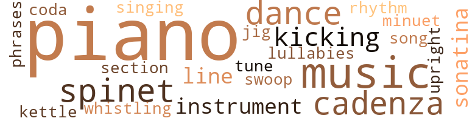
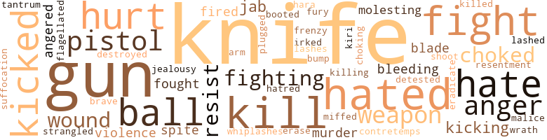

Dead Piano, by Van Dyke, Henry (1969)
99 music-related terms matched in this text.
Most frequent terms in this topic: piano (51); music (10); cadenza (5); dance (5); spinet (5)
cadenza.n.01
Definition: a brilliant solo passage occurring near the end of a piece of music
| word | sentence |
|---|---|
| cadenza | Sophie stopped playing the Mozart sona - tina and began pacing back and forth in front of the bay window , but Olga could not tell whether Sophie had heard anything or had merely become impatient after flubbing for the third or fourth time the cadenza in the first movement . |
| cadenza | It was apparently the cadenza , for she settled again at the piano bench and in an ex - aggerated , slow tempo thumped out the descending triplets with fierce determination , pursing her lips . |
| cadenza | Sophie asked , her hands poised over a triplet of the cadenza . |
| cadenza | Of course , Olga was not speaking of the determined repetition of the cadenza , and Sophie seemed to sense this ; Olga was referring to Sophie 's pacing back and forth before the bay window . |
| cadenza | She turned , looked at the troublesome cadenza , and bit the white steel rim of her glasses . |
dance.n.01
Definition: an artistic form of nonverbal communication
| word | sentence |
|---|---|
| dance | Nobody - all that hustling for tuition . . . cramming for exams . . . denying , denying almost everything - including a simple little thing like a cold bottle of beer . . . just one cold beer sometimes . . . including an ordinary thing like a dance once a month , or including once in a - " " Including a piece of pussy every now and then ? " |
| dance | Could anyone dance with one shoe on and one shoe off ? |
dance.v.03
Definition: skip, leap, or move up and down or sideways
| word | sentence |
|---|---|
| dance | But no one could dance with one shoe on and one shoe off . |
| dance | There was a high necessity to dance . |
| dance | I 'll dance . |
finale.n.01
Definition: the closing section of a musical composition
| word | sentence |
|---|---|
| coda | He shook the paper as though he were airing it out , as though the soft rustle were a coda to the anxiety that had beset the room . |
jig.n.01
Definition: music in three-four time for dancing a jig
| word | sentence |
|---|---|
| jig | It was filled with two jig - gers of whiskey . |
kettle.n.04
Definition: a large hemispherical brass or copper percussion instrument with a drumhead that can be tuned by adjusting the tension on it
| word | sentence |
|---|---|
| kettle | " Well , " she said , tilting a great deal of gin , which she really did n't like , into her glass , " the pot ought n't to call the kettle black , like they say . |
kick.v.04
Definition: kick a leg up
| word | sentence |
|---|---|
| kicking | " All y' awl sit , " he said , kicking the front door shut with the heel of his ankle boot . |
| Kicking | Kicking the teddy bear over on his belly , she said , " Why the fuck not - we might as well do something till they call . " " |
| kicking | " Now just shut up , goddamn it , " he said , kicking the teddy bear out of his way . |
lullaby.n.01
Definition: a quiet song intended to lull a child to sleep
| word | sentence |
|---|---|
| lullabies | She rocked back and forth on the seat of the sofa , holding fast to Finley and Sophie , rocking them , too , as though they were children , as though they were children in need of their lullabies . |
minuet.n.01
Definition: a stately court dance in the 17th century
| word | sentence |
|---|---|
| minuet | She put both hands on the keyboard and tried to remember a forgotten piece - a minuet - but the music rose in the room like a hurdy-gurdy at a carnival , as if to mock her past vani - ties , her past glories . |
music.n.01
Definition: an artistic form of auditory communication incorporating instrumental or vocal tones in a structured and continuous manner
| word | sentence |
|---|---|
| music | But Cheeter , made uneasy by the volume of music coming from the house , was already at the front door . |
| music | Let 's have music . |
| music | We need music . |
| music | She put both hands on the keyboard and tried to remember a forgotten piece - a minuet - but the music rose in the room like a hurdy-gurdy at a carnival , as if to mock her past vani - ties , her past glories . |
| music | And because the music sounded so grotesque , and because inexplicably she felt such a surge of liberation , an uncoiling , she sat there crying and laughing , laughing and crying , not caring that her fingers were hopelessly blundering over the splintered keys . |
| music | For a few seconds he seemed almost congenial - Sophie 's date for the evening , a guest asking for music - but this image did not last very long , for he said with measured meanness , " Look , baby , if you play , you play - if you do n't play , you do n't play . " |
| music | She listened for a second to Sophie 's music , and then she rose from the sofa , calmly but with a thrilling sense of recovered control . |
| music | She suddenly and fervently wished for music of greater power ; the sonatina was not really the music for a moment like this . |
| music | She suddenly and fervently wished for music of greater power ; the sonatina was not really the music for a moment like this . |
| music | It , the music , had turned bad to her ears as fear and nausea began to fill her . |
musical_instrument.n.01
Definition: any of various devices or contrivances that can be used to produce musical tones or sounds
| word | sentence |
|---|---|
| instruments | ' Sophie , Sophie . . . run along and play . . . run out and play ' . . . but Sophie sat on the hallway stairs , like somebody 's stranger , not like our child , while you washed off the instruments . . . your prongs and scrapers stained dark with the blood of the child we could n't afford to have . " |
| instrument | Oh , and do put away that ugly instrument , " she said , her long slinky arm dipping for a second in the direction of Fargo 's switchblade . |
phrase.n.02
Definition: a short musical passage
| word | sentence |
|---|---|
| phrases | They were sparring with words , with phrases , as if they were boxers warming up for the main event . |
piano.n.01
Definition: a keyboard instrument that is played by depressing keys that cause hammers to strike tuned strings and produce sounds
| word | sentence |
|---|---|
| piano | Olga , who 'd sat on the edge of the piano bench , stood lip . |
| piano | " Just ' Oh , Christ ' is all , " Sophie said , slumping upon the piano bench and glaring at the Mozart as though she might tear it to shreds . |
| piano | Fargo watched her sit on the piano bench and cross her thin thighs . |
| piano | Sophie straddled the piano bench , planting her hands flatly on the dark mahogany . |
| piano | Sophie , still straddling the piano bench , ran her fingers over several keys , producing a snippy chro - matic scale . |
| piano | You know perfectly - " Sophie interrupted Olga with a flagrantly discordant thump upon the piano keys . |
| piano | Finally , Sophie from the piano bench said in a voice starchy as Monday 's washing , " Perhaps he - perhaps he does n't want to stir , as it were . |
| piano | She 'd barely finished speaking when Fargo , squinting his eyes , picked Sophie up and sat her at the piano , facing the keys . |
| piano | " Fargo , I ca n't stand it , Fargo , " Sophie said at the piano . |
| piano | Play the fucking piano ! " |
| piano | She sat on the piano bench , with her hand stretched out over her lap , staring at the cube melting in her palm , trying to feel the pain of the icy melting , provoking pain to test her control over it , but she could not feel the pain of it ; the cube was cold and melting and numbing the center of her hand but she could not , even as she concentrated , feel the pain of the melting of it . |
| piano | It spilled on top of the glossy piano bench . |
| piano | Then she sat back down on the piano bench with the bear in her arms . |
| piano | Your piano pieces . |
| piano | On the piano ? " |
| piano | When Sophie got up and went to the piano , Sybil said , " Good , good . |
| piano | They all watched her , wondering if she was heading for the brandy again , but she stopped and sat primly upon the piano bench . |
| piano | Occasionally she lifted her eyes from her lap and glanced across the living room at her daughter , picking at bits and pieces of a sonatina on the piano , or sometimes she shot a glance toward the newspaper in front of her husband 's face , but more often , when she disengaged herself from the knitting in her lap , she glanced toward the foyer , toward the front door , and she listened . |
| piano | Teddy played the piano and his pink eyes blinked at pieces by Liszt . |
| piano | The heat of the liquid , the medicine in it , was stopping the ceiling from spinning and Teddy was leaving the piano and the sash was stopping its prancing and the spoons were stopping their clattering and . . . but she still did not have her shoe . |
| piano | And then , whether she meant to , or whether it was an accident - even later she never quite knew - she pointed the pistol at the piano . |
| piano | With her hair in her face , her arm extended rigidly , her eyes closed tightly , she fired again and again and again , emptying the bullets into the piano . |
| piano | Even after Olga had emptied the barrel , she con - tinued to hold the gun rigidly outward , toward the piano . |
| piano | " And , darling , that hideous piano with all those bullets in it . |
| piano | " Any - way , it 's just a piano . " |
| piano | " Just a piano ? " |
| piano | " Now , now , Sybil , " Olga said , her gaze still on the spinet , " do n't fuss - after all , it 's just a piano - a dead piano , if you will , but I do n't - '' " You 're damned right , Olga , it 's a dead piano , so why - " " Do n't fuss , Sybil . |
| piano | " Now , now , Sybil , " Olga said , her gaze still on the spinet , " do n't fuss - after all , it 's just a piano - a dead piano , if you will , but I do n't - '' " You 're damned right , Olga , it 's a dead piano , so why - " " Do n't fuss , Sybil . |
| piano | " Now , now , Sybil , " Olga said , her gaze still on the spinet , " do n't fuss - after all , it 's just a piano - a dead piano , if you will , but I do n't - '' " You 're damned right , Olga , it 's a dead piano , so why - " " Do n't fuss , Sybil . |
| piano | Had the piano caused her so much distress ? |
| piano | It was only an old piano , something of the past . |
| piano | And the piano . |
| piano | The teddy bear had been discarded , but the piano was still there . |
| piano | Sophie 's fingers , like brown marble , lay on the piano keys . |
| piano | It was apparently the cadenza , for she settled again at the piano bench and in an ex - aggerated , slow tempo thumped out the descending triplets with fierce determination , pursing her lips . |
| piano | Sophie at this moment eased off the piano bench and ran toward the foyer , toward the front door , but her hand had barely touched the glass knob when Hedda , in a cat-leap back down the stairs , grabbed her by the hair , held her a second as if she might slap her about the face . |
| piano | " Who plays this here piano ? " he asked . |
| piano | Fargo set his drink on top of the piano and took out his knife . |
| piano | He pushed hack the piano bench and stood up , ex - posing and hiding the nervous blade , exposing and hiding it , as if in some demonstration of an obscenity . |
| piano | He sat down at the piano and began , with careless thrusts , to jab the knife blade into the spaces between the white keys in the bass clef . |
| piano | " Play me some piano , " he said , looking at Sophie , trapped in his grip , his head tilted to the side . |
| piano | Play me some piano . " |
| piano | She 's gon na play me some piano . " |
| piano | " You gon na play me some piano , huh ? " |
| piano | " I said play the fucking piano . " |
| piano | " I like the piano , baby . " |
| piano | " I want you to play me some piano . " |
| piano | " You wo n't play me some piano ? " |
| piano | " I 'd like some nice piano , Sophie . |
| piano | I dig some nice piano . |
| piano | She ran to the piano and started the Mozart and Olga smiled for the first time that evening . |
rhythm.n.04
Definition: the arrangement of spoken words alternating stressed and unstressed elements
| word | sentence |
|---|---|
| rhythm | Whenever her fingers and wrists faltered , she scarcely noticed the tangle that disrupted the seductive , mindless rhythm . |
section.n.01
Definition: a self-contained part of a larger composition (written or musical)
| word | sentence |
|---|---|
| section | As recently as two weeks ago , when she had given her address on Adelaide Lane , the driver had clucked his tongue and shaken his head to establish sympathetic complicity before he said , " Ai n't it a shame - that neighborhood ... it use to be the swankiest section in all of St. Albans . |
sing.v.02
Definition: produce tones with the voice
| word | sentence |
|---|---|
| singing | " He just started up from the bottom gate . . . com - ing this way . . . singing his fool head off . . . and with that putt-putt thing . " |
sonatina.n.01
Definition: a short and simple sonata
| word | sentence |
|---|---|
| sonatina | Occasionally she lifted her eyes from her lap and glanced across the living room at her daughter , picking at bits and pieces of a sonatina on the piano , or sometimes she shot a glance toward the newspaper in front of her husband 's face , but more often , when she disengaged herself from the knitting in her lap , she glanced toward the foyer , toward the front door , and she listened . |
| sonatina | She suddenly and fervently wished for music of greater power ; the sonatina was not really the music for a moment like this . |
song.n.01
Definition: a short musical composition with words
| word | sentence |
|---|---|
| song | Gin , she felt , was a low-class drink ; she had heard in her childhood a Bessie Smith song that pleaded , " Gim me a pigfoot and a bottle of beer ... a reefer and a gang of gin . " |
spinet.n.02
Definition: early model harpsichord with only one string per note
| word | sentence |
|---|---|
| spinet | It was not entirely vanity that caused Olga Blake to dress her house as she dressed herself and to attach inordinate pride to her furnishings - even if she did demand of Lucille , the day maid , in addition to her regular chores , that she rub lemon polish twice a week into the dark wood of the spinet , that she rub to a high shine the brown porcelain horses at the hearth , that the books and china pieces be removed twice weekly for a thorough dusting . |
| spinet | Olga gazed at the bullet-scarred spinet with its splin - tered keys . |
| spinet | " Now , now , Sybil , " Olga said , her gaze still on the spinet , " do n't fuss - after all , it 's just a piano - a dead piano , if you will , but I do n't - '' " You 're damned right , Olga , it 's a dead piano , so why - " " Do n't fuss , Sybil . |
| spinet | She looked at the spinet for a long time , remembering the years of polish that had been applied to it , remembering Sophie 's trials and joys upon its keys . |
| spinet | Fargo left his perch on the arm of the chair usually occupied by Finley , and with his drink he went over to the spinet . |
swoop.n.01
Definition: (music) rapid sliding up or down the musical scale
| word | sentence |
|---|---|
| swoop | Hedda , with a searing swoop , slashed Olga across the cheek with her hand , her nails cutting into Olga 's flesh and drawing blood . |
tune.n.01
Definition: a succession of notes forming a distinctive sequence
| word | sentence |
|---|---|
| tune | What do you - " " Cunt , " he said quietly , walking slowly toward Sophie , " why n't you turn you little foxy ass around on that bench and play me a tune ? " |
| line | If there is one line - one small moment in time - that divides a girl from womanhood , Sophie had just passed it , crossed over . |
| line | Anyway , what little I did hear from Lewis 's talk was hogwash as far as I 'm concerned . . . that old tiresome line . . . " blacks are n't individuals , they are part of a cause " and stuff like " art must support the black revolution ; if it does n't , it 's invalid , " etc . |
upright.n.02
Definition: a piano with a vertical sounding board
| word | sentence |
|---|---|
| upright | " Now look , " he said , sitting upright on the sofa , " I 'm doing my job , see . |
whistle.v.01
Definition: make whistling sounds
| word | sentence |
|---|---|
| whistling | He could hear Cheeter whistling and he could hear the wind at the bay window . |
176 violence-related terms matched in this text.
Most frequent terms in this topic: knife (36); gun (19); hated (7); fight (5); hurt (5)
anger.n.01
Definition: a strong emotion; a feeling that is oriented toward some real or supposed grievance
| word | sentence |
|---|---|
| anger | This buried knowledge smoldered and turned into an unnamed anger , which , like acid , ate away at her self-esteem . |
| anger | Her thrusts of clawed anger at Fargo were really meant for Hedda . |
| anger | The pistol fire eased some of her tension , eased some of her anger . |
| anger | It disturbed Olga that her daughter clung to her childhood habit of pursing her lips into a pinched and prissy contour , but it was really more than disturb - ing : had Olga been a reflective woman , she would have realized her emotion was closer to anger ; she would have perhaps admitted that the lip-pursing she 'd not been able to tease , cajole , or punish Sophie into stop - ping was but another token of defeat in the unending battle in which she 'd been engaged with her daughter . |
| anger | Rather than admit defeat , admit the anger of the defeat , Olga would say to friends and neighbors - archly , with a silvery rise to her voice - " It really disturbs me that Sophie is so plain . " |
anger.v.02
Definition: become angry
| word | sentence |
|---|---|
| angered | The woman 's assurance angered her , not only because it smacked of a kind of put-down ( like Scotty Sykes ) , but also because Hedda found , against her will , she admired it ; it had style . |
| angered | It haunted him , this notion , for he knew that people who had money not only spoke well ( said the right words , and said them at the right time ) , but their attitudes were different from his , and it angered him that he could not crack the secret . |
bleeding.n.01
Definition: the flow of blood from a ruptured blood vessel
| word | sentence |
|---|---|
| bleeding | The bleeding had stopped but there was a slight swelling around the area where Hedda 's nails had torn her face . |
| bleeding | " It 's - it 's bleeding , " she said , looking at it in amaze - ment . |
boot.v.01
Definition: kick; give a boot to
| word | sentence |
|---|---|
| booted | Fargo turned four or five more pages and then said , with his elbow resting on his knee , his booted foot in the middle of the coffee table , " And now it 's your turn . |
bump.n.01
Definition: a lump on the body caused by a blow
| word | sentence |
|---|---|
| bump | There was a noise , a bump in the study , but Hedda quickly said , " I did n't hear nothing . " |
contretemps.n.01
Definition: an awkward clash
| word | sentence |
|---|---|
| contretemps | It was usually in the evening when Finley , her hus - band , returned from the hospital or his clinic that her nerves were in their worst state ( brought on by vacuous household duties and silent war with Lucille , the day maid ) , and usually it took only the slightest contretemps with Sophie , her seventeen-year-old daughter , to make her as taut as stretched tinsel ( a condition that Sophie considered her mother 's normal state ) . |
craze.n.02
Definition: state of violent mental agitation
| word | sentence |
|---|---|
| frenzy | When she came running out , her fists still in tight knots , she seemed to be demented , turning right and left , and then , at the foot of the coffee table , where Fargo had dropped her panties , she found what her frenzy needed : Fargo 's switchblade knife . |
destroy.v.04
Definition: put (an animal) to death
| word | sentence |
|---|---|
| destroyed | She knew well enough she was capable of exploding , and once she started exploding there 'd be no end to it , even if she destroyed herself along the way . |
eliminate.v.03
Definition: kill in large numbers
| word | sentence |
|---|---|
| eradicate | By the time she 'd gone to Alabama State Teachers College , she knew well the dictionary meaning of dignity , but still after her weekend jobs of scrubbing and mopping in Clover - dale at the Portlands and the Folsoms , she would apply late at night , almost maniacally , lotion and creams to her hands , not as if to eradicate the callouses and blisters but rather to massage away her weekend condition of servitude . |
erase.v.01
Definition: remove from memory or existence
| word | sentence |
|---|---|
| erase | A world , a domain , was indeed how Olga thought of her home , her life , her station , and this notion stemmed not so much from pretentiousness and vanity as it did from her desire to erase the memory of the degradations of the past . |
fight.n.05
Definition: a boxing or wrestling match
| word | sentence |
|---|---|
| fight | By the time she could get into the fight , Fargo had pulled away from Finley and now had his knife in his hand . |
| fight | But she really was not interested in baiting Sophie , in instigating another fight , and she turned and buried her face in the palm of her right hand . |
| fights | These days , however , she made her ministrations in private , like a secret drinker , for Sophie had said during one of their fights , " For cris - sake , Mother , you need a psychiatrist - putting that junk on your hands fifty times a day is like those neurotics who wash themselves for hours and hours . " |
fight.v.02
Definition: fight against or resist strongly
| word | sentence |
|---|---|
| fighting | In any case , Olga could not resist fighting back ; she replied , disguising the petti - ness of the squabble with parental disapproval , " It 's gone to your head , has n't it ? " |
| fight | Good Godl What in - " " Do n't fight it , Scotty , " Finley said , working his jaw and sucking the insides of his cheeks . |
| fight | " Do n't fight it . |
| fought | She fought down her jealousy , but Fargo 's desire for Sophie with her coltish legs and her pinching lips was too obvious . |
| fighting | " You do n't drink in the first place and - and under conditions of stress , you - " " Oh , for God 's sake , '' she said , fighting an impulse to scream . |
| fight | You seem to think all this is some sort of luck from some sort of lottery ticket - as if , as if - Christ Almighty , one way or the other I 've had to fight for it and pay for it . |
| fighting | " Oh , Fargo , Fargo ... in my way , in my way , I 've been fighting forty years to get you where you are now , and then you turn on me , on us , just because we want to get some goodness out of this rotten life before - before - and I 've paid for it , I 've paid for it , and not by just seeing rats and plaster falling . |
| fought | She fought a wave of nausea . |
fit.n.01
Definition: a display of bad temper
| word | sentence |
|---|---|
| tantrum | Sophie looked as if she were on the verge of a tantrum , a nervous breakdown , or worse . |
flagellate.v.01
Definition: whip
| word | sentence |
|---|---|
| flagellated | She flagellated herself with this truth , over and over , as if in some way she might make amends . |
fury.n.01
Definition: a feeling of intense anger
| word | sentence |
|---|---|
| fury | But Sophie 's fury was not directed against herself . |
gag.v.06
Definition: cause to retch or choke
| word | sentence |
|---|---|
| choked | You - you - " But she choked as she felt burning behind her eyes . |
| choked | She drank her brandy as though it were Tab , and then choked on it . |
| choked | Olga 's voice burst into the room , so choked that Sophie and Finley turned sharply . |
| choking | " And - and your Committee , " she con - tinued , the feeling of triumph giving way to the dry choking of her throat , " why , you 're a couple of low-class intimidating thugs , that 's all you are . |
gall.v.02
Definition: irritate or vex
| word | sentence |
|---|---|
| irked | I mean , Daddy seemed more irked about my not coming home last Christmas than you did - at least in that one little old stingy letter he wrote I thought so . |
gun.n.01
Definition: a weapon that discharges a missile at high velocity (especially from a metal tube or barrel)
| word | sentence |
|---|---|
| gun | What are you going to do - march mother and daddy down to the Chase Manhattan at gun point and - oh , for crissake , put him down ! |
| gun | I 've never seen arrogance until you came here tonight with your black revolution this and your black revolution that , with your knife and with your gun and with your Afro hair and with your gold earring . |
| gun | Fargo was torn between trying to pry Finley 's hand away from the ring in his ear and at the same time fishing for his gun . |
| gun | His hands went up and down , back and forth , as he tried to get the gun out of the holster and to keep his ear from being torn apart . |
| gun | With the gun in her hand , she stood trembling , frowning , frightened . |
| gun | Fargo made a move to take the weapon from her but Olga stepped back , panting , and began to wave the gun to and fro in front of her face . |
| gun | She looked at the gun , turning its muzzle to her nose , as if she might smell it . |
| gun | Sophie , seeing the gun turned toward Olga 's own face , said , " No , Mama ! |
| gun | Olga , with her arm extended rigidly in front of her as though she were a marksman on a firing range , slowly pointed the gun at Fargo . |
| gun | Olga slowly swung the gun to Sophie . |
| gun | Olga pointed the gun to the study door and held it pointed at the door for a long time . |
| gun | Next she moved the gun to Teddy . |
| gun | There was the smell of gun - powder . |
| gun | Even after Olga had emptied the barrel , she con - tinued to hold the gun rigidly outward , toward the piano . |
| gun | The sight of Cheeter with his gun stung her to life . |
| gun | He held the gun in front of him as though it were a hot - handled skillet . |
| gun | Olga had been right ; this was her enemy , her first enemy - far more than Fargo with his gun and his knife . |
| gun | " No , no , Finley , " she went on quickly while she still had steam , " there 's no point in being intimidated by that gun and that knife and this - all this slummy talk . |
| gun | What did you think - I 'd come out with a tommy gun or something ? " |
harakiri.n.01
Definition: ritual suicide by self-disembowelment on a sword; practiced by samurai in the traditional Japanese society
| word | sentence |
|---|---|
| hara-kiri | Crouched like an animal , she clutched the knife until it seemed the bones of her knuckles would break through the flesh ; she looked as if she might be about to plunge the blade into her own stomach in some violent hara-kiri . |
hate.n.01
Definition: the emotion of intense dislike; a feeling of dislike so strong that it demands action
| word | sentence |
|---|---|
| hate | Hedda picked up her cards and said as if to herself : " What an evening - this evening with the Blakes " But the words were not as acid on her tongue as she 'd planned them , and her hands were trembling with hate . |
| hatred | For an awful moment , Olga thought Sophie would plunge the blade into her throat , into her breast , for the hatred in her eyes was immense . |
| hate | She shivered with hate and embarrassment as she remem - bered what she had perhaps said about Finley . |
| hate | She could not dredge up that old hate and fear ; she could scarcely remember it ; she had perhaps purged herself more thoroughly than she realized on that night when she knelt before Cheeter . |
hate.v.01
Definition: dislike intensely; feel antipathy or aversion towards
| word | sentence |
|---|---|
| hate | They both had been caught in the act : Fargo had seen how frightened Olga was of getting old ; she seemed to hate the wrinkles about her neck , a neck that must have once been as smooth as Sophie 's ; but she , she had seen him , too . |
| hated | On one hand , she hated always being reduced to a sex machine , but also she liked the feeling of power it gave her . |
| hated | She hated being forced into a role . |
| hated | She hated Scotty Sykes , but she hated worse having been forced to act the whore while Fargo stood behind the study door . |
| hated | She hated Scotty Sykes , but she hated worse having been forced to act the whore while Fargo stood behind the study door . |
| hate | At least she could see them , hate them . |
| detested | * As much as Hedda detested and resented Sybil , she could not deny a creeping admiration for the woman 's control , her cool . |
| hated | It was cowardice and despair that made Olga hold her tongue ; it was getting late ; it was drizzling that after - noon and taxis were hard to come by ; yet she hated herself for not stopping the cab and getting out , hated herself for the ignoble ( enforced , she felt ) masquerade . |
| hated | It was cowardice and despair that made Olga hold her tongue ; it was getting late ; it was drizzling that after - noon and taxis were hard to come by ; yet she hated herself for not stopping the cab and getting out , hated herself for the ignoble ( enforced , she felt ) masquerade . |
| hated | Olga tried to remember how much she 'd feared and hated Hedda , but it did n't work . |
injury.n.01
Definition: any physical damage to the body caused by violence or accident or fracture etc.
| word | sentence |
|---|---|
| hurt | To make the hurt go away , huh ? |
| hurt | Kiss him to stop the hurt . " |
| hurt | No , she intended to hurt before she got hurt ; she intended to kill before any hurt could be done . |
jab.n.02
Definition: a quick short straight punch
| word | sentence |
|---|---|
| jabs | Her hazel eyes began to sparkle and she spoke in mean little jabs . |
| jab | He sat down at the piano and began , with careless thrusts , to jab the knife blade into the spaces between the white keys in the bass clef . |
| jab | Her quick jab sent the ashtray rolling across the rug and forced Finley back again onto the sofa beside Olga . |
jealousy.n.01
Definition: a feeling of jealous envy (especially of a rival)
| word | sentence |
|---|---|
| jealousy | She fought down her jealousy , but Fargo 's desire for Sophie with her coltish legs and her pinching lips was too obvious . |
kick.v.04
Definition: kick a leg up
| word | sentence |
|---|---|
| kicking | " All y' awl sit , " he said , kicking the front door shut with the heel of his ankle boot . |
| Kicking | Kicking the teddy bear over on his belly , she said , " Why the fuck not - we might as well do something till they call . " " |
| kicking | " Now just shut up , goddamn it , " he said , kicking the teddy bear out of his way . |
kick_back.v.02
Definition: spring back, as from a forceful thrust
| word | sentence |
|---|---|
| kicked | He kicked against the ropes binding his feet . |
| kicked | Fargo had just been kicked out of the small pad on West Twenty-second Street - from Cora 's ; Cora , an NYU student who had been less than a love affair but more than just a lay . |
| kicked | I - " His lips came closer to Sophie 's face and stopped firmly over her mouth as she squirmed and beat him on the chest with one free hand and kicked at his glossy ankle boots . |
| kicked | She kicked at the ashtray near her foot . |
| kicked | " Bargain , " Fargo said , and smiled with even white teeth , but the smile quickly soured and he kicked at the brown horse 's mane . |
kill.v.10
Definition: cause the death of, without intention
| word | sentence |
|---|---|
| kill | They kill us or they do n't . |
| kill | No , she intended to hurt before she got hurt ; she intended to kill before any hurt could be done . |
| kill | They 're going to kill us . |
| kill | " And why do n't you kill us and get it over with ? " |
| Kill | She made one last attempt : from her knees she looked up at Cheeter , her face twisted , her lip curled downward , a string of saliva dripping from her snarled lip , and screamed : " Kill me ! |
| Kill | Kill me ! |
| Kill | Kill me ! " |
| killed | If it had been a bit warmer , Olga would have killed time by staying there longer on the park bench and watching , as she usually did , the young boys with their football and the young girls with their roller skates . |
killing.n.01
Definition: an event that causes someone to die
| word | sentence |
|---|---|
| killing | Like I said , the Committee does the killing when and where and how they decide it . |
knife.n.02
Definition: a weapon with a handle and blade with a sharp point
| word | sentence |
|---|---|
| knife | He took out his knife , pressed the black button on the case 's side , and the blade shot out , catching yellow glints from the table lamp . |
| knife | " This stupid piece of crap , " he said , watching Sophie bite her fist as he twisted the knife around in the brown fur . |
| knife | Fargo opened the door , knife in hand , and said , showing brilliant teeth , " Greetings . " |
| knife | I mean like I do n't want to have to stick this knife in his gut . " |
| knife | Fargo pointed his knife at Cheeter . |
| knife | He took out his knife . |
| knife | I 've never seen arrogance until you came here tonight with your black revolution this and your black revolution that , with your knife and with your gun and with your Afro hair and with your gold earring . |
| knife | Fargo asked , his knife blade poking in the air as he started to the front door . |
| knife | Then he put his knife in his pocket and walked over to the card table . |
| knife | By the time she could get into the fight , Fargo had pulled away from Finley and now had his knife in his hand . |
| knife | The only thing between them was the switchblade knife . |
| knife | Fargo had not realized he 'd pulled out his knife until the blade hung there below Hedda 's nose . |
| knife | He felt like a fool with his knife in one hand and the panties in the other hand , standing in the middle of the room while everybody looked at him . |
| knife | He was taking up too much space , holding the knife and the panties in his hands . |
| knife | The panties and the knife looked so small in his big hands , so small , and he stood there unable to take the panties and the knife out of his hands . |
| knife | The panties and the knife looked so small in his big hands , so small , and he stood there unable to take the panties and the knife out of his hands . |
| knife | " It 's none of your fucking business , " he told them , talking on , talking fast , hoping he 'd stop looking so tall and so stupid in the middle of the room with his knife in his hand and with the damn panties in his hand . |
| knife | He still had Sophie 's panties in one hand , the knife in the other . |
| knife | The knife cut no ice with Hedda ; her viper tongue would n't be stopped . |
| knife | Fargo dropped the knife on the rug at his foot and picked up the pants from the coffee table . |
| knife | When she came running out , her fists still in tight knots , she seemed to be demented , turning right and left , and then , at the foot of the coffee table , where Fargo had dropped her panties , she found what her frenzy needed : Fargo 's switchblade knife . |
| knife | Crouched like an animal , she clutched the knife until it seemed the bones of her knuckles would break through the flesh ; she looked as if she might be about to plunge the blade into her own stomach in some violent hara-kiri . |
| knife | The power of her thrust was such that her hand was driven down over the knife 's guard and the blade ate quickly across the inside of her hand . |
| knife | He tapped the flat side of his knife against Finley 's neck . |
| knife | She was older than Sophie by perhaps ten years ; she was probably twenty - eight or thirty , about the same age as the tall man with the knife . |
| knife | " And - and put away that knife . |
| knife | In fact , there 's - " " Man , are you for real ? " the intruder said with a smile as cold as the gleam of the blade of his knife . |
| knife | The sneer that never quite broke across her face bothered Olga almost as much as the man 's knife . |
| knife | " Nobody round , huh ? " the man asked Hedda , shoving Finley toward a chair with the steel end of his knife . |
| knife | He now held the knife loosely at his side . |
| knife | Olga had been right ; this was her enemy , her first enemy - far more than Fargo with his gun and his knife . |
| knife | " No , no , Finley , " she went on quickly while she still had steam , " there 's no point in being intimidated by that gun and that knife and this - all this slummy talk . |
| knife | Fargo set his drink on top of the piano and took out his knife . |
| knife | He sat down at the piano and began , with careless thrusts , to jab the knife blade into the spaces between the white keys in the bass clef . |
| knife | Sophie ignored Finley and , although she did not dare try to take the knife from Fargo , she did hold fast to his arm . |
| knife | He pointed his knife , although it was closed , at Finley . |
malice.n.01
Definition: feeling a need to see others suffer
| word | sentence |
|---|---|
| spite | With the special knowledge of her own love , Hedda saw what was taking place in spite of Fargo 's rough words . |
| malice | " I - I - " she stuttered , and then suddenly , as though she 'd been plugged into an electric socket , her face became bright with malice . |
| spite | Fargo looked so - so , I do n't know , sort of vulnerable and pathetic in spite of his self-important air . |
miff.v.01
Definition: cause to be annoyed
| word | sentence |
|---|---|
| miffed | Hedda was both miffed and pleased . |
molest.v.01
Definition: harass or assault sexually; make indecent advances to
| word | sentence |
|---|---|
| molesting | " Stop molesting that child . " |
| molesting | " Hell , I ai n't molesting the chick . . . . |
murder.n.01
Definition: unlawful premeditated killing of a human being by a human being
| word | sentence |
|---|---|
| murder | And murder is n't all that easy to get away with . |
| murder | Even murder is n't as easy as you make it out , you know . |
musket_ball.n.01
Definition: a solid projectile that is shot by a musket
| word | sentence |
|---|---|
| ball | I mean , loosen up - have a ball if you want . |
| ball | Yawl been having a ball in here while I been - " " A ball ? |
| ball | Yawl been having a ball in here while I been - " " A ball ? |
| ball | A ball ? " |
| ball | " Yes , yes , a ball . |
open_fire.v.01
Definition: start firing a weapon
| word | sentence |
|---|---|
| fired | She fired . |
| fired | With her hair in her face , her arm extended rigidly , her eyes closed tightly , she fired again and again and again , emptying the bullets into the piano . |
pain.v.02
Definition: cause emotional anguish or make miserable
| word | sentence |
|---|---|
| hurt | Jake Foster was , as she 'd hoped , frightened and hurt and done in : his male vanity would not let him believe those two years of lovemaking ( out of wedlock , after the child was born ) were a cold , calculated two-year scheme to marry him and divorce him . |
| hurt | No , she intended to hurt before she got hurt ; she intended to kill before any hurt could be done . |
pistol.n.01
Definition: a firearm that is held and fired with one hand
| word | sentence |
|---|---|
| pistol | " Afraid the neighbors 'll hear the pistol shots ? |
| pistol | She pummeled Fargo until one of her frantic tearing hands came by chance upon the pistol butt . |
| pistol | And then , whether she meant to , or whether it was an accident - even later she never quite knew - she pointed the pistol at the piano . |
| pistol | The pistol fire eased some of her tension , eased some of her anger . |
| pistol | Olga dropped the pistol on the rug and opened her eyes . |
punch.v.01
Definition: deliver a quick blow to
| word | sentence |
|---|---|
| plugged | " I - I - " she stuttered , and then suddenly , as though she 'd been plugged into an electric socket , her face became bright with malice . |
resentment.n.01
Definition: a feeling of deep and bitter anger and ill-will
| word | sentence |
|---|---|
| resentment | Having been blessed physically in so many other ways , she could normally , basking in resentment and self-pity , count upon her wrinkles for dependable , if bitter , distraction . |
resist.v.04
Definition: withstand the force of something
| word | sentence |
|---|---|
| resist | In any case , Olga could not resist fighting back ; she replied , disguising the petti - ness of the squabble with parental disapproval , " It 's gone to your head , has n't it ? " |
| resist | Olga could not resist saying , " Well ? " |
| resist | You know , " she said , unable to resist illustrating with a quick gesture in the air Sophie 's Mozartian fingers . |
shoot.v.02
Definition: kill by firing a missile
| word | sentence |
|---|---|
| shoot | You shoot us ? |
strangle.v.01
Definition: kill by squeezing the throat of so as to cut off the air
| word | sentence |
|---|---|
| strangled | Tears , which seemed more in her throat than in her eyes , blocked her voice , strangled her words . |
suffocation.n.01
Definition: killing by depriving of oxygen
| word | sentence |
|---|---|
| suffocation | She took her hand away from her face , as if to get air , as if she 'd been at the point of suffocation , and in a breathless pinched voice , she said , as much to the objects and furnishings of her room as to Sophie and Finley , " Are n't we ? " |
sword.n.01
Definition: a cutting or thrusting weapon that has a long metal blade and a hilt with a hand guard
| word | sentence |
|---|---|
| blade | Fargo asked , his knife blade poking in the air as he started to the front door . |
| blade | He sat down at the piano and began , with careless thrusts , to jab the knife blade into the spaces between the white keys in the bass clef . |
violence.n.01
Definition: an act of aggression (as one against a person who resists)
| word | sentence |
|---|---|
| violence | Yet it was not a quartet of violence , but rather a duet , for it was really Hedda and Fargo who were coming to terms , perhaps disastrously , and Sophie and Olga were the least part of it . |
| violence | I mean , there 's no need for violence or - or ... in point of fact , in point of fact , whatever cash , or whatever . . . I mean , there 's nothing here much to rob . |
weapon.n.01
Definition: any instrument or instrumentality used in fighting or hunting
| word | sentence |
|---|---|
| arm | The silk panties had fallen over the sofa arm into the magazine rack and the noise of the wind in the trees had faded away ; he heard only the sound of her breathing , a muffled cotton-sound in the folds of his dashiki . |
| weapon | She 'd found her weapon - her appropriate weapon , her smile seemed to say . |
| weapon | She 'd found her weapon - her appropriate weapon , her smile seemed to say . |
| weapon | Fargo made a move to take the weapon from her but Olga stepped back , panting , and began to wave the gun to and fro in front of her face . |
| weapon | Her insane carelessness , the lack of caution with the lethal weapon , unnerved Fargo . |
weather.v.01
Definition: face and withstand with courage
| word | sentence |
|---|---|
| brave | In fact , she thought she was being sensible and brave . |
whip.v.04
Definition: strike as if by whipping
| word | sentence |
|---|---|
| lashed | Hedda whirled around and lashed out . |
| lashes | Sophie , in fact , was not plain : her nose was very much like Olga 's - straight , well-shaped , and proportioned gently on her oval face ; long lashes shaded her light brown eyes ( the color of Finley 's ) , and the maple-syrup hue of her skin had not a flaw . |
whiplash.n.01
Definition: an injury to the neck (the cervical vertebrae) resulting from rapid acceleration or deceleration (as in an automobile accident)
| word | sentence |
|---|---|
| whiplashes | Words broke away from her like whiplashes . |
wound.n.01
Definition: an injury to living tissue (especially an injury involving a cut or break in the skin)
| word | sentence |
|---|---|
| wounds | " . . . It 's just a teddy bear , " he heard his voice saying ; he 'd been talking and had n't heard all of what he 'd said and before he could look away from the pink glass of the bear 's eyes and before the scotch left his head he 'd buried his face into the bear 's belly and kissed its wounds . |
| wound | After the fracas had died down , she 'd asked to be allowed to go to her bedroom , where she could apply a medicated lotion to the wound , but Hedda vetoed that proposition flatly , declaring that cold water was good enough . |
| wounds | After all , some good was coming out of it - at least it was healing the wounds between her and her daughter . |
wrath.n.01
Definition: intense anger (usually on an epic scale)
| word | sentence |
|---|---|
| wrath | Is that all that makes your wrath come up and blow your prettified Afro head ? |
52 religion-related terms matched in this text.
Most frequent terms in this topic: God (18); heaven (7); Christ (5); siren (3); preacher (2)
baptist.n.01
Definition: follower of Baptistic doctrines
| word | sentence |
|---|---|
| Baptist | From my Baptist back - ground . |
church.n.02
Definition: a place for public (especially Christian) worship
| word | sentence |
|---|---|
| church | " Or a church , maybe ? " |
church.n.04
Definition: the body of people who attend or belong to a particular local church
| word | sentence |
|---|---|
| church | Every time I start to - to - I mean , you and Daddy never saw the inside of a church until four or five months ago . " |
| Church | Sophie was still tracing with her toe pat - terns on the rug when Olga heard her say something about St. Thomas Episcopal Church , the pithy codicil being " Just because they started letting a few blacks trickle in , you seem to think - " " Negro , Sophie . |
divine.v.01
Definition: perceive intuitively or through some inexplicable perceptive powers
| word | sentence |
|---|---|
| divine | Since Sophie 's question had been perfunctory and spiteful , she did not linger to divine whether his " hmm " meant no , yes , or maybe , but instead she pivoted on her faded blue sneakers and walked back and forth in front of the bay window , only to irritate Olga further . |
eden.n.01
Definition: any place of complete bliss and delight and peace
| word | sentence |
|---|---|
| heaven | " O God in heaven . |
| heaven | O God in heaven . |
| heaven | Have you seen - God in heaven , in Anniston , Alabama , one day ! |
| heaven | " DARLINGS , I must tell you the most heaven bit of - oh , I am sorry . |
| heavens | " Finley , " the woman said , coming down into the living room , " what sort of - good heavens , what sort of silly game are you - where 's Scotty ? " |
| heaven | " Mother does , " she said vaguely , looking at the clock , " have tendencies towards being hyper - " " Oh , Finley , for heaven 's sake , it 's staring you straight in the face . |
| heaven | " I saw you , for heaven 's sake ! |
| heavens | The silence was more vicious than a barrage of vituperations , more stinging then any insult : Hedda , sitting on the coffee table , stretched her hand to grasp air from the heavens , and then , slowly drawing her fin - gers together into a fist , she softly tapped her forehead as if to rid her mind of the irrelevance of and her dis - taste for what Olga had said ; Fargo , his back to the mirror above the empty fireplace , smiled in exaggerated pity . |
| heaven | Do n't just stand there , for heaven 's sake - unless you want - you know , he 's already down the street at Scotty and Sybil 's . |
god.n.03
Definition: a man of such superior qualities that he seems like a deity to other people
| word | sentence |
|---|---|
| God | A neighbor , for God 's sake . |
| God | " And what 's this God bit you keep fussing about all of a sud - den ? |
| God | " You do n't drink in the first place and - and under conditions of stress , you - " " Oh , for God 's sake , '' she said , fighting an impulse to scream . |
| God | " O God in heaven . |
| God | O God in heaven . |
| God | It did n't matter to me if you ended up doing General Practice instead of going on and on and on - I did n't want to , God knows , I did n't want to . " |
| God | For God 's sake , did n't recognize you . |
| God | " For God 's sake , why not ? |
| God | " What , for God 's sake , is going on here , Finley ? " |
| God | " I suppose , " Sybil was saying to Sophie , " it 's just as well , what with cancer and emphysema and God knows what else - I mean , I 'm not exactly advocating it , you know , your smoking , but there is a certain style , you know , the whole ritual of it , and Bennington is a terribly sophisticated place , I understand . |
| God | Come on , come on , for God 's sake . " |
| God | " Oh , for God 's sake , come on , now , " Finley pleaded , trying to get a toehold in the rug . |
| God | Play , for God 's sake , Sophie , play . |
| God | Go - go play with Teddy or something , for God 's sake . " |
| God | ... so , for God 's sake , use it , use it . " |
| God | Fear rather than meanness prompted Olga to say , " Well , tell her , Sophie , for God 's sake , tell her . " |
| God | And there 's no money here - I mean , less than a hundred or so - and silverware and the television set and - and what I mean , " she said , her voice halting , losing its authority as Hedda took one of Finley 's ciga - rettes from the coffee table , lit it , and blew a stream of blue smoke down over the sofa into her face , " is - is what I mean is , for God 's sake , if you 're being robbers and brutal and forcing yourselves into people 's houses , why do n't you just be professional about it ? |
| God | Before she could ask what was going on , Finley came back from the study with two yellow legal pads and , with a forced attempt at conviviality , said to Fargo , " For God 's sake , put that thing away . |
godhead.n.01
Definition: terms referring to the Judeo-Christian God
| word | sentence |
|---|---|
| Almighty | You seem to think all this is some sort of luck from some sort of lottery ticket - as if , as if - Christ Almighty , one way or the other I 've had to fight for it and pay for it . |
hell.n.01
Definition: any place of pain and turmoil
| word | sentence |
|---|---|
| hell | " What the hell were you doing in there ? |
imitation.n.01
Definition: the doctrine that representations of nature or human behavior should be accurate imitations
| word | sentence |
|---|---|
| imitation | And then to Sophie , with his thin lips puckered in an imitation , " ' I 'm really quite rusty . ' |
jesus.n.01
Definition: a teacher and prophet born in Bethlehem and active in Nazareth; his life and sermons form the basis for Christianity (circa 4 BC - AD 29)
| word | sentence |
|---|---|
| Jesus | Lord Jesus , what was he going to do with his hands ? |
messiah.n.01
Definition: any expected deliverer
| word | sentence |
|---|---|
| Christ | " Oh , Christ what ? " |
| Christ | " Just ' Oh , Christ ' is all , " Sophie said , slumping upon the piano bench and glaring at the Mozart as though she might tear it to shreds . |
| Christ | " For Christ 's sake , answer me ! " |
| Christ | You seem to think all this is some sort of luck from some sort of lottery ticket - as if , as if - Christ Almighty , one way or the other I 've had to fight for it and pay for it . |
| Christ | " A handkerchief , for Christ 's sake . " |
prayer.n.01
Definition: the act of communicating with a deity (especially as a petition or in adoration or contrition or thanksgiving)
| word | sentence |
|---|---|
| prayer | Her mother , forever off in the kitchens of whites , would get home way past dusk , and would , in place of an eve - ning prayer , prod Olga to remember always : '' Keep your dignity , chile , no matter how much filth you have to put your hands into . |
preacher.n.01
Definition: someone whose occupation is preaching the gospel
| word | sentence |
|---|---|
| preacher | " In East Orange , New Jersey , this jack-legged preacher with a Mark IV Continental and a swimming pool tried to hand us some bullshit about his funds was all tied up and like he did n't even have a pot to - " " Thirty thousand , honey , " Hedda put in . |
| preacher | That jack-legged preacher in Jersey - $ 30,000 . " |
religion.n.01
Definition: a strong belief in a supernatural power or powers that control human destiny
| word | sentence |
|---|---|
| faith | Or does it mean faith ? |
satan.n.01
Definition: (Judeo-Christian and Islamic religions) chief spirit of evil and adversary of God; tempter of mankind; master of Hell
| word | sentence |
|---|---|
| devil | Why in the devil do n't you chuck it out ? " |
sin.n.06
Definition: violent and excited activity
| word | sentence |
|---|---|
| sins | I mean , the petty sins are the ones that really enslave us , I think . |
| sins | Olga stayed on her knees , her hands now hanging limply at her sides , her head bowed , as if in penance for her sins . |
siren.n.01
Definition: a sea nymph (part woman and part bird) supposed to lure sailors to destruction on the rocks where the nymphs lived
| word | sentence |
|---|---|
| siren | The shrilling intrusion sounded like a siren of disas - ter , and Finley 's taut attentiveness to the piercing rings , his delay in answering , frightened her nearly as much as the sound of the phone itself . |
| siren | In the distance , there was a siren . |
| siren | The siren grew louder . |
wasp.n.01
Definition: a white person of Anglo-Saxon ancestry who belongs to a Protestant denomination
| word | sentence |
|---|---|
| WASP | Katie , who is about as WASP as you can get , was all for it too - ( though , dear heart that she is , she 's a mite naive - can you imagine - she was ready to pick up the phone to call Julian Bond to come to talk - for a measly $ 350 - I 'm sure he would n't even come for our top price of $ 500 ) . |